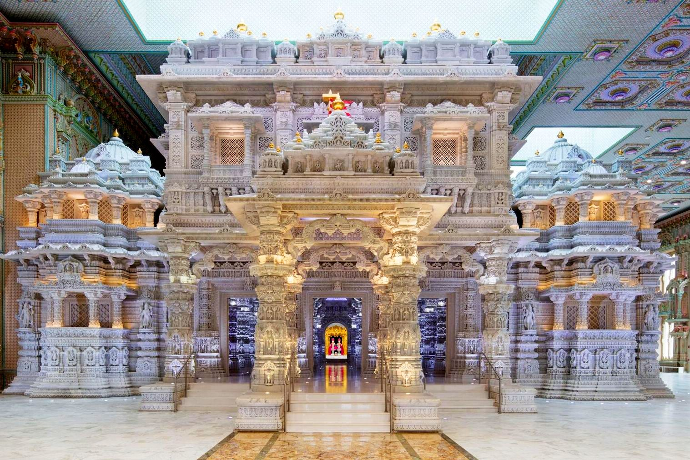
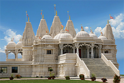
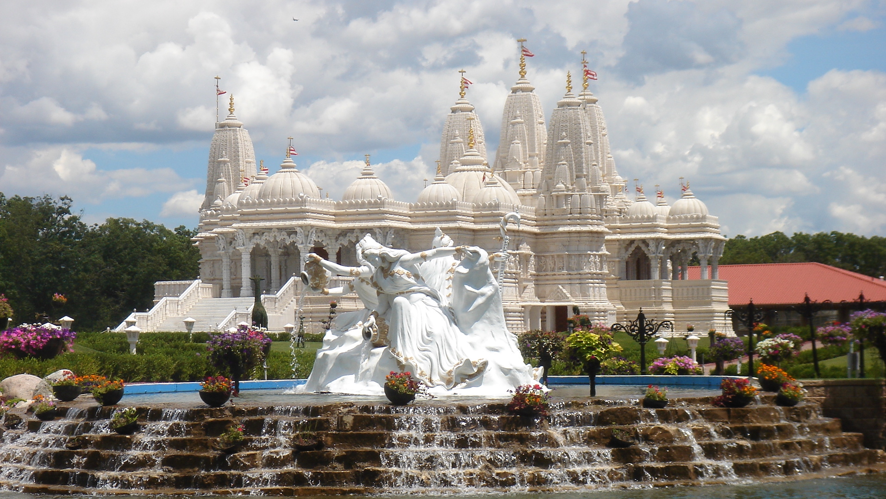
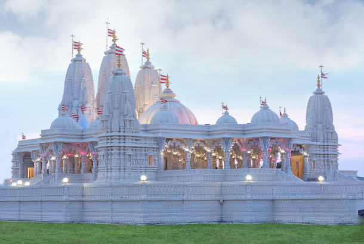
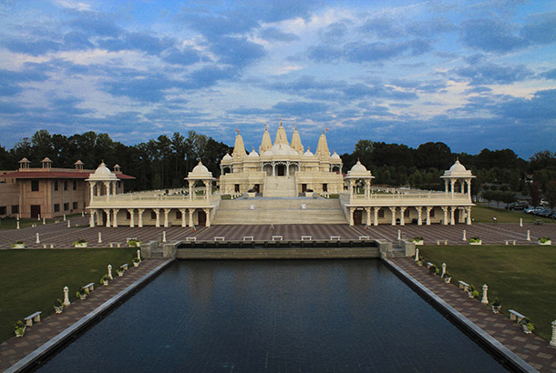

Robbinsville, NJ
One of the largest traditional Hindu mandirs outside India. Known for its intricate Italian marble and devotion.

Toronto, ON
Canada’s first shikharbaddh mandir, a hub for spirituality, service, and culture in North America.

Chicago, IL
The first BAPS shikharbaddh mandir in the USA, an architectural and spiritual landmark for the Midwest.

Houston, TX
Combining grandeur and devotion, this mandir is a testament to unity in diversity.

Chino Hills, CA
Famous for its dazzling white stonework, this mandir brings serenity and inspiration to the West Coast.

Atlanta, GA
Known for its intricate carvings and beautiful white exterior, inspiring the Southeast USA.